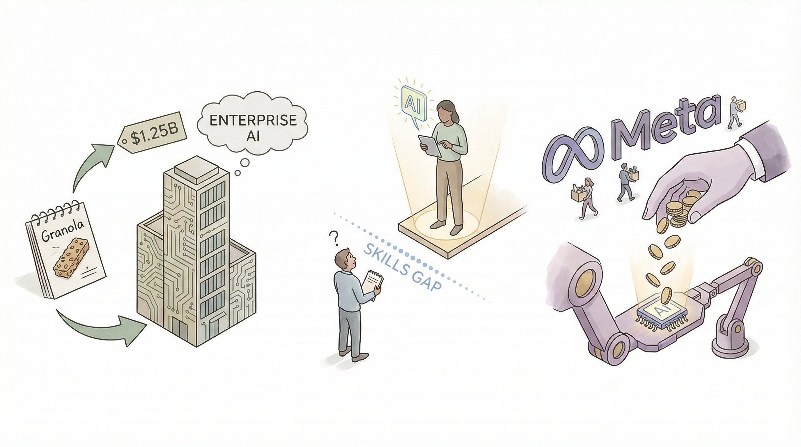

Granola完成1.25亿美元融资，估值达15亿美元，扩展企业AI应用服务。
两克伴AIGC日报
2026-03-26 星期四

本期关注：Granola融资1.25亿美元估值15亿美元扩展企业AI应用，Anthropic报告AI技能差距扩大引发就业担忧，Meta裁员同时加大AI投入，Google合作推动AI机器人发展，业界反思AI代理工程需平衡速度与质量，离线优先AI CLI应用受关注。
📰 行业动态
Anthropic报告AI未取代工作，但早期数据显示技能差距扩大，引发未来就业担忧。
Meta裁员数百人，同时加大AI投入。
Google与Agile Robots合作，推动AI机器人技术发展。
🔥 今日焦点
本文探讨了当前AI领域在代理工程方面的趋势，作者Mario Zechner，作为Pi agent框架的创造者，对当前快速产出大量代码的趋势表示不满。他认为，我们为了追求速度而放弃了纪律和自主性，导致了一种对快速编码的依赖。Zechner指出，尽管人类和代理都会犯错误，但代理的错误积累速度更快。由于没有人类瓶颈，代理可以无限制地产生代码，这可能导致代码库中的错误迅速增加。
这一观点对AI领域具有重要意义，因为它揭示了当前AI工程实践中可能忽视的问题。在追求效率的同时，我们应更加重视代码质量和错误控制，以避免因错误累积而导致的严重后果。对于AI从业者来说，这提醒我们在设计代理和系统时，不能只关注速度，更要注重稳健性和可持续性。Zechner的观点为AI领域的发展提供了有益的反思，有助于推动行业向更加成熟和稳健的方向发展。
这款名为“Show HN: An offline first focused agentic CLI application powered by Ollama”的AI资讯，介绍了一个以离线优先为核心的代理命令行界面（CLI）应用程序。该应用由本地的Ollama模型驱动，集成了先进的内存管理功能，并具有极低的依赖性。该项目遵循MIT许可协议。
这款应用的核心在于其离线优先的设计理念，这意味着用户无需依赖互联网即可使用其功能，这对于那些网络环境不稳定或无法持续连接互联网的用户来说尤为重要。此外，应用集成的Ollama模型能够提供强大的AI功能，而其先进的内存管理技术则确保了应用的稳定性和高效性。
近日，一篇名为《Show HN: First autonomous AI agent purchase via open protocol (UCP)》的文章在网络上引起了广泛关注。文章介绍了首个通过开放协议（UCP）实现的自主人工智能代理购买案例，标志着人工智能领域迈出了重要一步。
该案例的核心内容是，通过UCP协议，一家企业成功实现了对自主人工智能代理的购买。这一突破性进展意味着，人工智能技术不再局限于实验室，而是可以应用于实际商业场景，为企业带来更多价值。
📚 深度长文
本文探讨了Stripe工程师如何利用AI技术构建“小矮人”——一种从Slack反应中自动生成PR的编码代理。文章详细介绍了Stripe工程师如何部署这些AI代理，并展示了其每周通过Slack反应生成1300个PR的高效能力。文章还包含了一个演示，展示了机器到机器支付如何计划一场价值5.47美元的生日派对。本文不仅揭示了Stripe在AI编码代理领域的创新实践，还深入探讨了机器到机器支付在现实生活中的应用，为AI从业者和相关领域研究者提供了宝贵的参考和启示。
---
《Agentic commerce runs on truth and context》一文由Andrew Reiskind和Manish Sood共同撰写，深入探讨了Agentic commerce（代理商业）这一新兴领域。文章核心观点在于，Agentic commerce的核心在于真实性和情境理解，它通过数字代理实现从辅助到执行的转变，为用户带来更加智能、个性化的服务。
文章以一个生动的场景为例，描述了用户如何通过数字代理完成复杂任务，如使用积分预订家庭旅行。数字代理不仅能够理解用户的意图，还能根据用户的历史偏好和预算限制，自动生成行程并执行购买，从而实现真正的“一键式”服务。
datasette-llm 0.1a1是最新发布的Datasette基础插件，旨在为其他Datasette插件如datasette-enrichments-llm提供LLM模型支持。该插件新增了register_llm_purposes()插件钩子和get_purposes()函数，方便用户检索已注册的目的字符串。其核心观点在于通过配置不同模型适用于不同目的，实现数据丰富和SQL查询辅助等功能的个性化定制。例如，数据丰富可使用GPT-5.4-nano，而SQL查询辅助则采用Sonnet 4.6。此插件具有深度和独特见解，为AI从业者提供了丰富的应用场景和解决方案。阅读此文章，读者可了解Datasette-llm插件的功能和优势，以及如何利用其实现个性化模型配置，提高数据分析和处理效率。
---
《Skills in LangSmith Fleet》一文由LangChain Accounts撰写，深入探讨了LangSmith Fleet的最新功能——支持共享技能。文章核心观点在于，LangSmith Fleet的升级使得团队中的智能代理能够装备上针对特定任务的专用知识库，从而提升整体工作效率和团队协作能力。
文章通过详细阐述共享技能的实现机制，展示了如何将知识库与智能代理相结合，实现知识的快速传播和高效利用。关键论据包括：技能共享的灵活性、知识库的动态更新以及智能代理的智能化决策过程。这些论据有力地证明了LangSmith Fleet在提升团队技能和知识管理方面的独特优势。
🛠️ 产品推荐
Agent Kernel是一款基于Markdown的AI代理工具，通过三个Markdown文件实现AI代理的状态管理。该产品旨在解决传统AI代理状态难以持久化的问题，使AI代理能够保持状态，提高交互的连贯性和效率。Agent Kernel的核心功能是简化AI代理的状态管理，通过Markdown文件轻松实现状态保存和恢复，让AI代理具备更丰富的交互能力。对于技术从业者而言，Agent Kernel的AI能力和创新点在于其简洁易用的设计，为AI代理的开发和应用提供了新的思路。
---
MonkePay是一款基于x402协议和Coinbase CDP的轻量级支付解决方案，允许用户通过每API请求收取USDC支付。该产品简化了支付流程，只需三行中间件即可实现钱包自动配置、USDC链上验证。MonkePay有效解决了使用x402协议时繁琐的支付逻辑、钱包管理和链上收据验证等问题，让开发者快速实现API端点收费，节省时间和成本，提高业务效率。
---
GhostDesk是一款MCP服务器，为AI代理提供完整的虚拟Linux桌面。该产品赋予AI代理人类操作电脑的能力，包括真实鼠标移动、自然打字、截图应对CAPTCHA等。GhostDesk能够语义理解UI，模拟真实用户行为，帮助AI代理完成预订航班、网站爬取、操作无API的旧软件、全应用质量检测等任务。通过一个指令，AI代理即可实现人类在桌面上的操作，极大提升AI的实用性和效率。